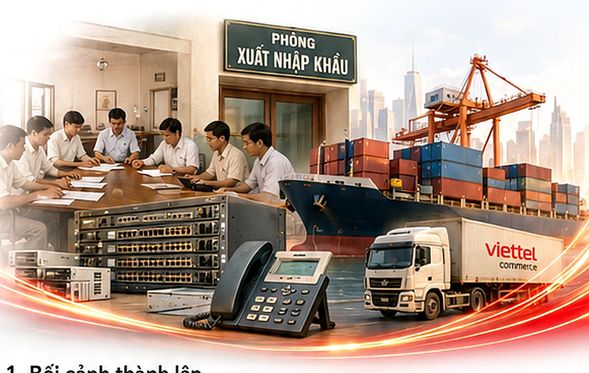
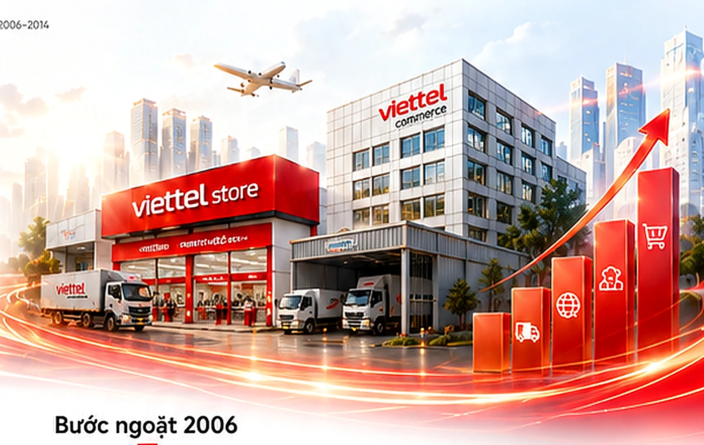
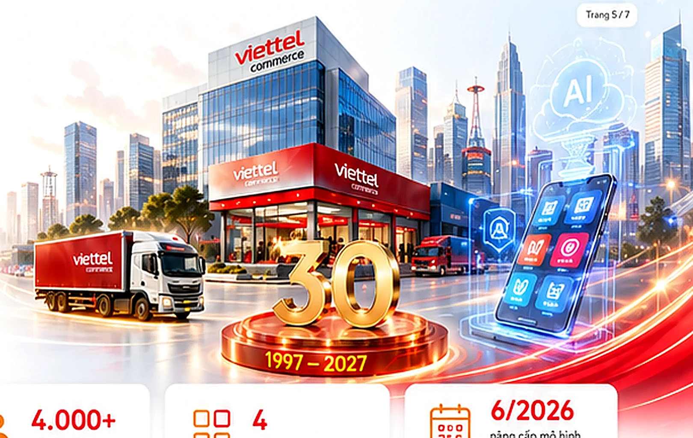

1997–2005
KHỞI NGUỒN
Mở đầu hành trình và xây nền móng.
Bấm vào từng hành trình để xem nội dung dạng chữ hoặc nghe giọng đọc.

Mở đầu hành trình và xây nền móng.

Mở rộng quy mô và hệ sinh thái.

Đổi mới, bứt phá và khẳng định vị thế.

Kiến tạo tương lai và tầm vóc mới.